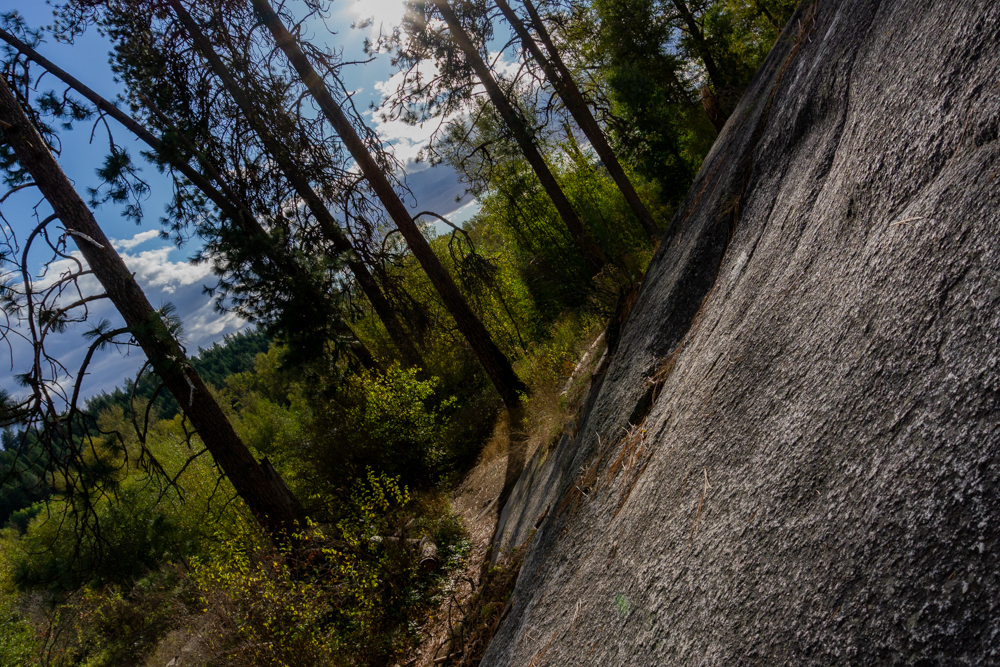
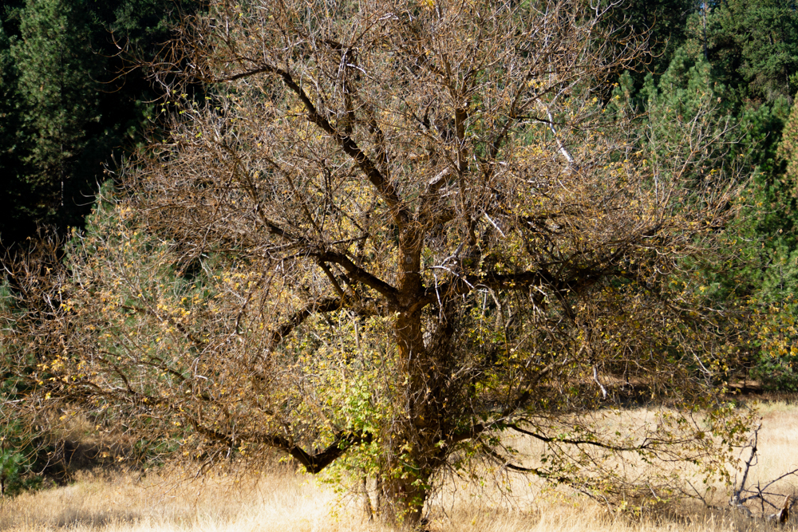
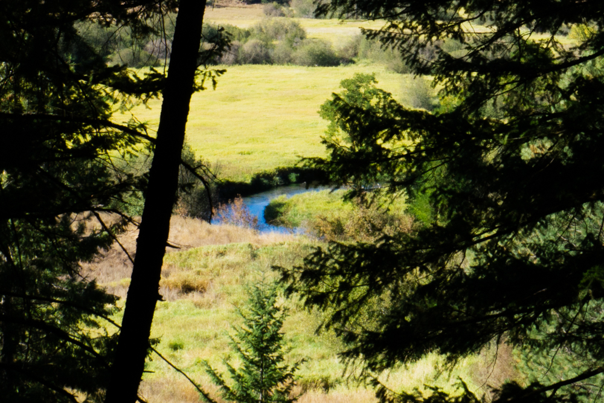
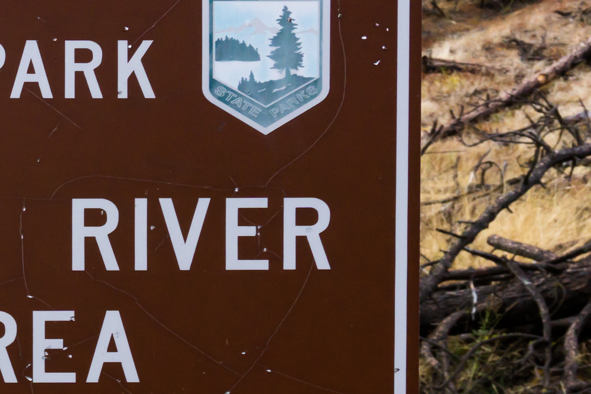
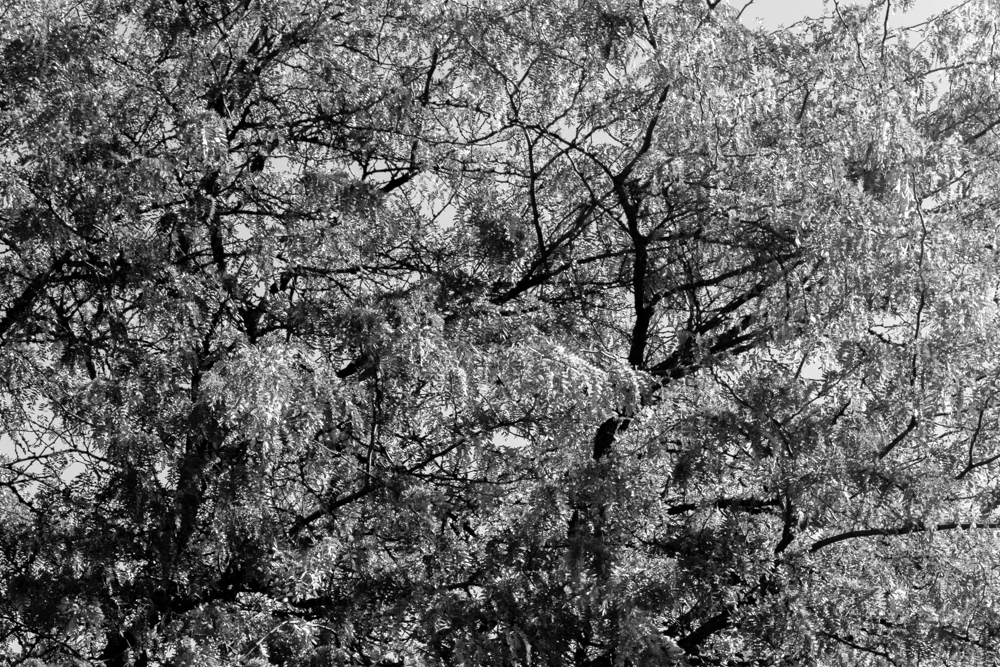
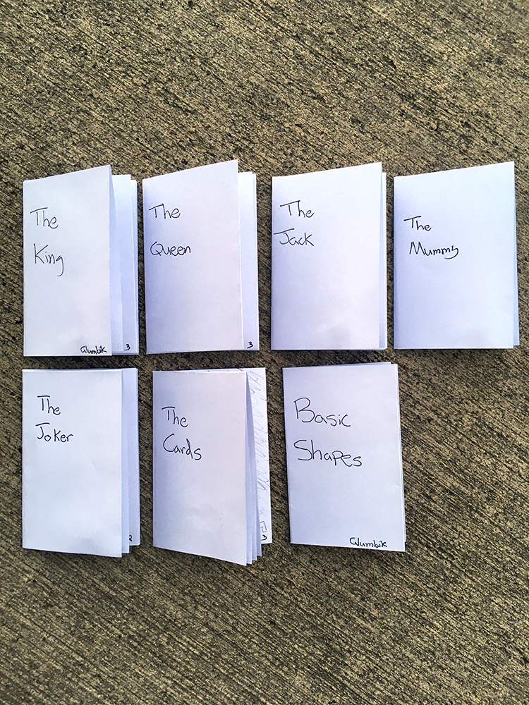
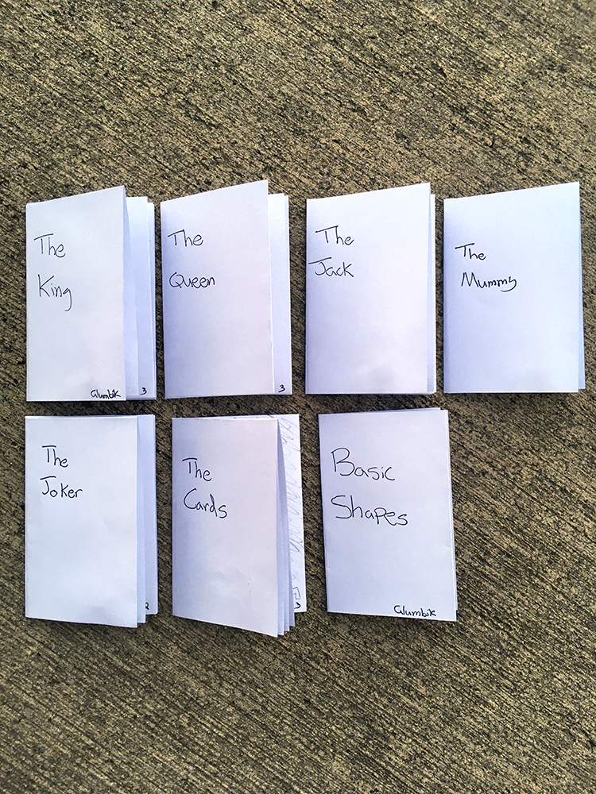

Design 350-040
What is Photography?
Szarkowski’s Sorting Hat
Aperture | Shutter Speed | ISO | Etc
Composition
Summary: “In Plato’s Cave”
P4 Reflection
Light
Light
Eirica Anderson | GIPHY
The following content are summaries of chapters 1–3 from “Light Science & Magic”.
While a photographer does not have to pay attention to light to capture a decent image, using lighting as your ally will lesson your burden of post-editing. The size and way that light is reflected will also pose different environments. If you pay attention to the lighting – whether artificial and / or natural – you can achieve great photography with minimal equipment.

Diego PH | Unsplash
At a scientifical level, light is an electromagnetic radiation that is transmitted as protons. All light travels at the same speed, but the electromagnetic field of each proton changes how we perceive the light – that is if the light is within the visible light spectrum. Even though it is common to remember visible light as ROYGBIV, violet light has more energy than red. Warm light will be light at a lower temperature, and cool light will be light at a higher temperature. When it comes to taking a photograph, it is better to have an image that is overexposed, for it is easier to dial back light in post-production than vis versa.

Clarisse Meyer | Unsplash
In regard to how light is reflected, there are a few situations to be aware of. A reflection that is diffused will reflect light equally regardless of the cameras position. If you need to decrease the amount of light on the subject you can distance the light source from the subject, or you can distance the camera from the subject. A direct, light reflection will display the light to only one point-of-view. All other angles will either be very low lit or not at all. Understanding how light is reflecting will change your approach to physically placing the light source or camera.

Mahosadha Ong | Unsplash
P4 Reflection
The Ultimate .gif Database | GIPHY
At present, this digital photography class has focused my attention on light. From previous design classes I have learned to create contrast that can be assessable, but this class has expanded that thought process. Now I see a composition and dissect the highlights from the whites and the shadows from the blacks. With every photographic shot I have taken thus far, I strive to create a composition that creates hierarchy, focus, and movement through light: or the absence of light). With the regards to color, color has an inherent lightness / darkness. These properties of color also needs to be taken into account when composing and post-editing. In other areas of design, I have had enough practice to develop a design style, but with photography I am too new to define my own style. Therefore, I will continue to learn the basics and focus on working with the basics.
Summary: “In Plato’s Cave”
From “In Plato’s Cave” Susan Sontag – writer, philosopher, etc. – argues that the photograph does not relay reality as concretely as society holds them to be. A strong comparison to Plato’s Cave philosophy is drawn to further this argument: humans experience reality within a cave and see reality as shadows projected on the cave. To begin, a photograph is only a selection of the current environment. A photograph is bound by its edges, and beyond these edges are additional information that may or may not change to reality we are viewing. Even if this photo conveys the mood of the subject correctly, the viewer can never fully understand how the image interacts with the subject’s daily life.
The photograph has also taken an authoritative role in society. The photograph is fact in courts; the photograph is proof in science; and the photograph is knowledge to people. Humans collect and hold onto photos as a way to remember the past and learn new realities. We view the photo as a collectable to collect and trade. The photograph allows us to easily reproduce and share these realities. Susan Sontag argues that the photo cannot give a clear reality without supplemental content. Altogether, the photograph is noted to be addictive form of viewing reality but should be not taken for granted.
Visual Representation

Ivana Cajina | Unsplash

Marco Bianchetti | Unsplash

Pine Watt | Unsplash

Tingey Injury Law Firm | Unsplash

Adam Birkett | Unsplash
Composition
Simon Falk | GIPHY
Rule of Thirds
By dividing the composition into a three by three grid, you create points and sections of strength or weakness.
Additional Resources
Page 17, After Effects for Designers, Chris Jackson
Golden Triangle
Instead of a horizontal and vertical grid, the golden triangle partitions the composition by two positive and two negative diagonal lines. By placing your subject on these lines or intersections you can empower your subject.
Additional Resources
www.tamron.eu/se/nyheter/blog/detail/golden-triangle-544/
Balancing Elements (Visual Weight)
Every object in relation to other objects has a visual weight. How much attention does it draw to itself? Factors such as size, color, shape, etc. can influence the object’s visual weight.
Additional Resources
www.smashingmagazine.com/2014/12/design-principles-visual-weight-direction/
Leading Lines
By paying attention to the forms in your composition that are lines, you can direct your viewers eye to where you would like them to go.
Additional Resources
www.digital-photography-school.com/how-to-use-leading-lines-for-better-compositions/
Symmetry and Patterns
Compositions that a purely symmetrical and pattern based may cause a viewer to lose interest. Compositions that create a break in symmetry or the pattern can create interest and surprise.
Additional Resources
www.en.wikipedia.org/wiki/Symmetry
Vantage Point
By changing your vantage point or angle of elevation / depression, you can relay information that may not have been seen otherwise.
Additional Resources
www.merriam-webster.com/dictionary/vantage%20point
Figure Ground
Figure ground is a relationship between objects that are in front and behind one and another. This is a topic also in phycology, for people might perceive a shape from the outline created between the figure and ground.
Additional Resources
www.verywellmind.com/what-is-figure-ground-perception-2795195
Depth
Depth can refer to depth of field – the focus of the scene whether it be wide or shallow. Depth can also refer to the color scheme, or how deep is the message of the composition? Does its meaning lie in the face value of what we see or in what we are supposed to infer?
Additional Resources
www.masterclass.com/articles/learn-about-depth-of-field-in-photography
Framing
In photography – and other mediums, your image is framed by its physical edges. The subject of the image may also be framed by objects within the picture as well.
Additional Resources
www.photographyvox.com/a/photography-composition-framing/
Cropping
By cropping an image, you can select which parts of the image you actual want to produce. Through cropping you can alter the compositions above factors.
Additional Resources
www.photographyicon.com/crop/
Anyone can take a photo. If you are lucky it will have strong composition, but through understanding the above aspects of a photograph's composition, you can better target / select your subject. By knowing how to emphasize or deemphasize your subject you can create a more dynamic, photographic composition.
Aperture | Shutter Speed | ISO | Etc
GIPHY
Aperture
Shutter Speed
ISO
Depth of Field
Dynamic Range
The following are five terms relevant to photography. The aperture is like the iris of the camera / lens. The size of the opening determines both how much light reaches the sensor and the depth of field of the image. A smaller opening will result in less light and a wider depth of field. The opposite is true. The shutter is like the eye lid. A faster shutter speed will result in less light and an image that freezes time. A slower shutter speed will do the opposite. The ISO is like the nervous system in the back of the eye. I high ISO is more sensitive to light, and thus amplifies the signal more. A high ISO may also result in a grainy texture. Depth of field is like your vision. How clear are you able to see? Is all of the picture in focus, or is part of the image in focus? Lastly, dynamic range refers to the spectrum of light. What tonal and / or hue qualities are present. Is there a large range of values or a small range? To recap, aperture, shutter speed, ISO, depth of field, and dynamic range are five basic qualities of a photograph.
Additional Resources | https://en.wikipedia.org/wiki/Aperture | https://photographylife.com/what-is-shutter-speed-in-photography | https://photographylife.com/what-is-iso-in-photography | https://en.wikipedia.org/wiki/Depth_of_field | https://www.cambridgeincolour.com/tutorials/dynamic-range.htm
What is Photography?
Working Title | GIPHY
At the heart, what really makes a photograph a photograph. Do not look to this article for the answer, for I do not know. Though, I will attempt to convey a perspective on photography. A perspective that either will expand your knowledge or be forgotten instantaneously. Let’s give it a go.
Paintings are constructed; photos are taken (“The Photographers Eye”), and contemporary art can be used as a form to cheat death (“the Ontology of the Photographic Image”).
No matter how you describe the above – whether it be photo, image, picture, or etc. – it truly is a digital scan of a pocket watch. Is this scan worthy of being a photograph? At the mechanical level, a scanner is very similar to a digital camera. A electronic sensor reads the light coming in and creates a composition of colored dots. Does this make a scanner a camera and a camera a scanner?
The pocket watch used – to those who recognize it – is much more than any old watch. It belonged to my great-grandmother: Ruby Renggli. After she died, I kept onto this pocket watch as a memento. For me, this image is not just an image of a watch, this is an image to which many memories are associated with. Does this memento preserved in a digital form cheat death?
After all of the digging deep and thinking critically, we are still left with “What makes a photo a photo?” To me a photo preserves a moment, a memory to be relieved at a later time. The means of capturing this moment is through a process that is practically instantaneously. Will you call this scanned pocket watched a photo?
Szarkowski’s Sorting Hat
the thing itself

Melina Kiefer | Unsplash
the detail

Jon Sailer | Unsplash
the frame

Ilya Ilford | Unsplash
time

Jason Leung | Unsplash
vantage point

Kazuo ota | Unsplash
 
